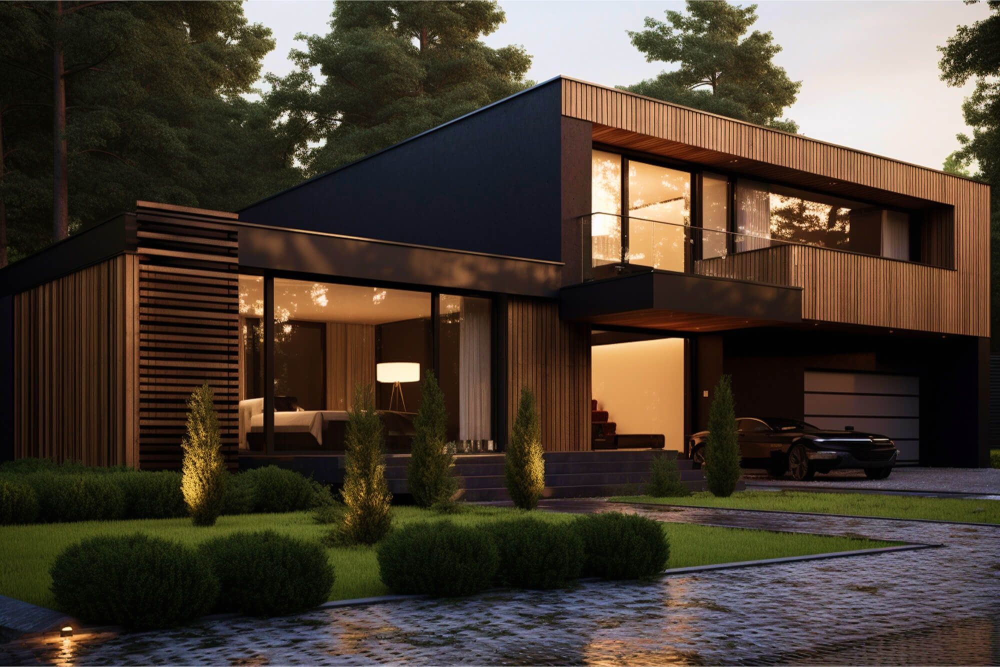
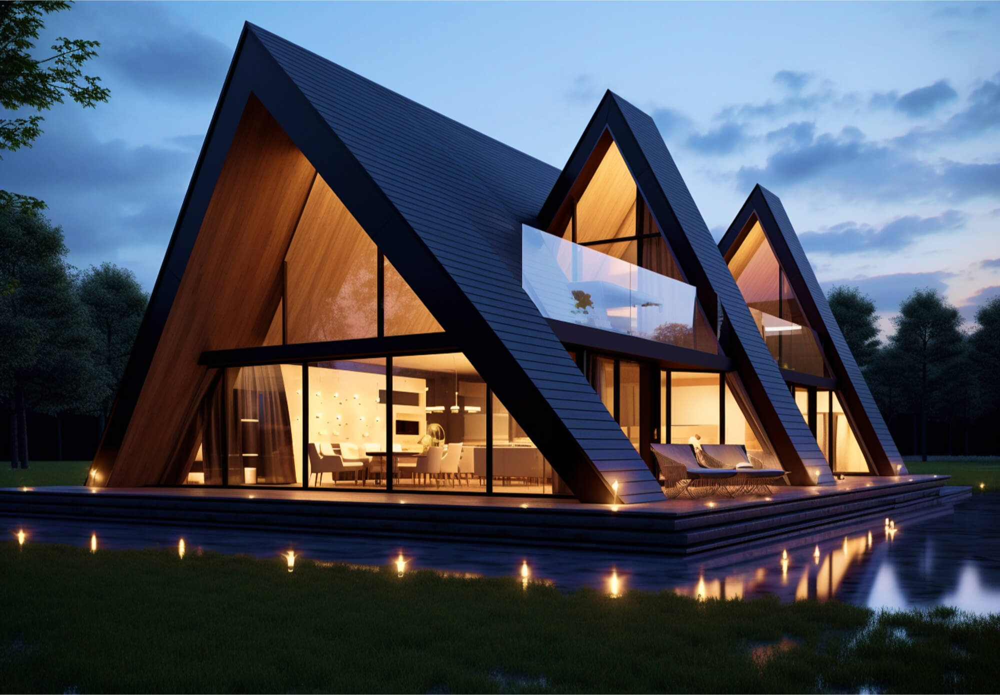
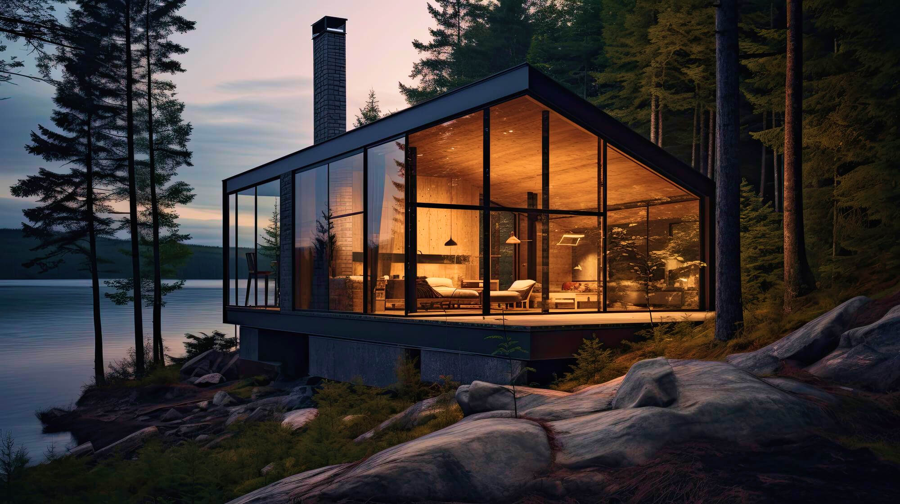

01 / Habitação privada
Casa do Lago
Região dos Lagos, Noruega
Estúdio independente de arquitetura · Copenhaga
Região dos Lagos, Noruega · 2024
Um refúgio sereno onde a madeira, a água e a floresta se encontram em equilíbrio.
Descobrir os projetosObra selecionada · 2021—2025
Desenhamos casas e espaços de hospitalidade com atenção ao contexto, aos materiais e à vida de quem os habita.

Região dos Lagos, Noruega

Västerbotten, Suécia

Aarhus, Dinamarca
A nossa abordagem
Do primeiro esboço ao último detalhe, procuramos o equilíbrio entre uma ideia clara, materiais honestos e uma relação mais consciente com o ambiente.
Conheça o nosso atelier